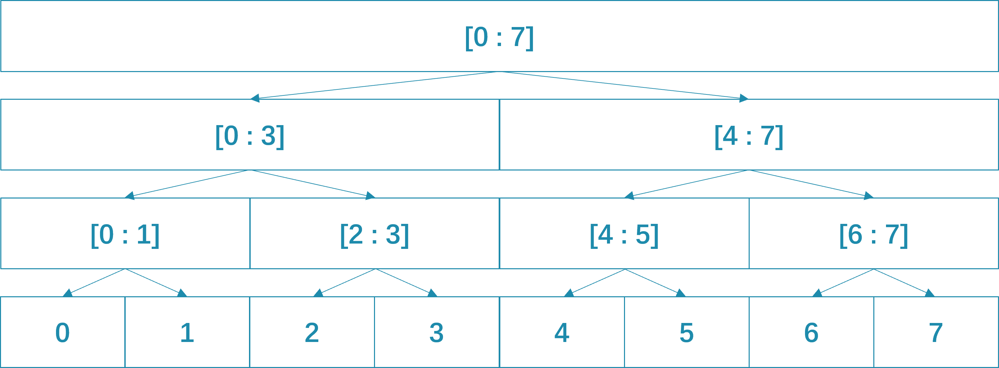
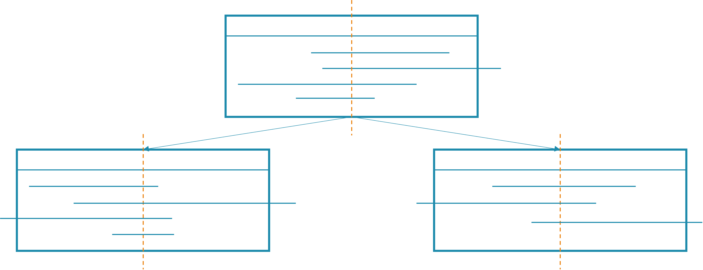

线段树（Segment Tree）和区间树（Interval Tree）是常常被搞混的两种算法，这里将对两种算法进行介绍。
RMQ 问题，即区间最值问题（Range Minimum/Maximum Query），一般表现为多次询问一个区间中的最值。
传统做法来说，是在每次询问的时候对这个区间进行扫描，复杂度为 O ( N × M ) O(N \times M) O ( N × M ) N N N M M M
分析以后可以发现，在上面这个算法中，每次询问都做了 N − 1 N-1 N − 1
线段树解决 RMQ 问题的原理可以简单阐述为“区间的最值是其任意一个划分中所有子集最值的最值”。在线段树算法中，一般把区间均分为两个。
简单起见，一般可以先找一个能够覆盖整个区间的 2 的幂，作为树的根节点，代表整个区间的最值。根节点有左右两个子节点，分别代表整个区间的左半和右半。如图所示层层划分，最终所有的叶节点均代表区间中的单个元素。

显而易见的，只需要在初始化遍历整个区间时不断向上维护这颗树，使得每个节点都保存对应区间的最大值，就可以用更快的方式搜索。
搜索的时候会有三种状况：
节点对应区间全部落在所询问区间内，那么直接返回节点对应的值。
节点对应区间全部落在所询问区间外，那么就返回一个大值（或者小值）。
节点对应区间只有一部分落在所询问区间内，那么继续搜索它的两个子节点，然后返回两个子节点的较大值（较小值）。
由于算法本身的性质，每一层中选取的节点数至多不超过一个，因而每次查询的操作次数至多不超过 2 × ( L − 1 ) 2 \times (L-1) 2 × ( L − 1 ) L L L O ( M log N ) O(M\log{N}) O ( M log N )
下面是具体实现。因为使用数组实现很方便，所以这里用数组来实现线段树。
1 2 3 4 5 6 7 8 9 10 11 12 13 14 15 16 17 18 19 20 21 22 23 24 25 26 27 28 29 30 31 32 33 34 35 36 37 38 39 40 #include <iostream> #include <algorithm> #define MAXN 1<<17 int n, m, seg[2 *MAXN-1 ];void add (int node, int val) node += n-1 ; seg[node] = val; while (node){ node = (node-1 )/2 ; seg[node]=std::min (seg[node*2 +1 ],seg[node*2 +2 ]); } } int query (int start, int end, int node, int L, int R) if (R < start || end < L) return 1 <<30 ; if (start <= L && R <= end) return seg[node]; else { int valL = query (start, end, node*2 +1 , L, (L+R)/2 ); int valR = query (start, end, node*2 +2 , (L+R)/2 +1 , R); return std::min (valL,valR); } } int main () std::cin >> n; int num=1 ; while (num < n) num*=2 ; for (int i=0 ;i<num*2 -1 ;i++) seg[i]=1 <<30 ; for (int i=0 ;i<n;i++){ int value=0 ; std::cin >> value; add (i,value); } std::cin>>m; for (int i=1 ;i<=m;i++){ int L = 0 , R = 0 ; std::cin >> L >> R; std::cout << query (L, R, 0 , 0 , num-1 ) << std::endl; } return 0 ; }
区间染色问题通常具有这样一种形式，即每个元素都具有某个性质，而一次操作则是对某个区间内所有元素的性质进行一次改变。之后的询问一般是询问某个区间有多少种性质。
显然经典的模拟方法时间复杂度还是 O ( N × M ) O(N \times M) O ( N × M ) N N N M M M
于是自然而然就想到线段树或者是并查集。这两者都可以解决这个问题，不过这里主要讲线段树。
这个线段树的节点不再存储区间的最值，而是表示这段区间的颜色。用正整数为每个颜色标号，未上色的部分标记为 0，如果这段区域有多个颜色，那么标记为 -1。
采用懒标记的方法，当我们发现一个节点标记的区间恰好落在操作区间内时，只需要在这个节点打上标记即可，而不必下探到其子节点。之后如果有在子节点标记的区间发生改动，在改变被选中的子节点的同时，让那个未被选中的子节点继承父节点的懒标记，这样就仍然可以维护这棵线段树。
这样一个线段树的雏形就构造好了，以下是部分实现：
1 2 3 4 5 6 7 8 9 10 11 12 13 14 15 16 17 18 19 20 21 22 23 24 25 26 27 28 29 30 31 32 void spread (int node, int val) while (node){ node = (node-1 )/2 ; if (seg[node]!=val) seg[node]=-1 ; } } void change (int start, int end, int node, int L, int R, int val, int father) if (R < start || end < L ){ if (father >= 0 ) seg[node] = father; return ; } else if (start <= L && R <= end){ spread (node, val); seg[node]=val; return ; } else { change (start, end, node*2 +1 , L, (L+R)/2 , val, seg[node]); change (start, end, node*2 +2 , (L+R)/2 +1 , R, val, seg[node]); } } void query (int start, int end, int node, int L, int R) if (R < start || end < L) return ; if (seg[node] >= 0 ){ ans.insert (seg[node]); return ; } query (start, end, node*2 +1 , L, (L+R)/2 ); query (start, end, node*2 +2 , (L+R)/2 +1 , R); }
这里只是展示一个大概的思路，落实到具体问题又有许多变化，比如区间可能需要离散化等等。
区间树和线段树是不同的，但是他们常常被混为一谈。
区间树维护的是这样一棵树，这棵树中每个节点代表一组区间，这一组区间的交不为空，也就是说，总能找到一个点是该组中每一个区间的元素。这个点通常是某个区间的中点。这个节点的左子节点代表另外一组区间，这组区间中任意一个区间都全部落在这个中点的左侧，右子节点也是同理。
这样就大体知道的构造方法。首先需要一个区间的中点来定位根节点。在选取好一个中点后，对于每个区间都进行添加到树的操作。对于一个节点，如果这个节点的中点在区间内，那么就把这个区间加入节点的区间列表，否则就将其放入左子节点或者右子节点，如果没有，那么就新建子节点。这个构造过程的复杂度是 O ( N log N ) O(N\log{N}) O ( N log N )

在构造了这样一颗树以后，就可以解决有哪些区间经过了该点，或者哪些区间覆盖了某个区间的问题了。在搜索时，首先搜索本节点的区间列表，返回所有结果后判断中点和询问的点（或区间）的大小，然后决定继续进入左子树还是右子树继续搜索。最好是将每个节点的区间列表按照左端点进行升序排序，同时按照右端点进行降序排序。用两倍的空间使得每个节点都有两个有序的区间列表，这样既可以避免在区间集中的时候或者根节点偏向左侧或者右侧的时候发生退化，也可以让效率大大提升。
可以模拟这个过程。假设现在有一个点，发现其在根节点右侧，那么就按照构造好的右端点升序的列表搜索。如果发现这个点已经在某个区间外部，又因为这个列表有序，之后的所有区间都可以跳过，进入第一层子节点。这意味着每次搜索的复杂度几乎只取决于这个点所在的区间个数。这个时间复杂度大约是 O ( K + log N ) O(K+\log{N}) O ( K + log N ) K K K
if (hexo-config('comment') && hexo-config('comment.enable') == true && hexo-config('comment.use')) {
if (hexo-config('comment.use') == "valine") {
@import "./valine.styl"
}
else if (hexo-config('comment.use') == "gitalk") {
@import "./gitalk.styl"
}
else if (hexo-config('comment.use') == "twikoo") {
@import "./twikoo.styl"
}
else if (hexo-config('comment.use') == "waline") {
@import "./waline.styl"
}
}
.comments-container {
display inline-block
width 100%
margin-top var(--components-spacing)
.comment-area-title {
width 100%
color var(--text-color-3)
font-size 1.38rem
line-height 2
i {
color var(--text-color-3)
}
+keep-tablet() {
font-size 1.2rem
}
}
.configuration-items-error-tip {
display flex
align-items center
margin-top 1rem
color var(--text-color-3)
font-size 1rem
i {
margin-right 0.3rem
color var(--text-color-3)
font-size 1.2rem
}
}
.comment-plugin-fail {
display none
flex-direction column
align-items center
justify-content space-around
width 100%
padding 2rem
.fail-tip {
color var(--text-color-3)
font-size 1.1rem
}
.reload {
margin-top 1rem
}
}
.comment-plugin-loading {
flex-direction column
padding 1rem
color var(--text-color-3)
.loading-icon {
color var(--text-color-4)
font-size 2rem
}
.load-tip {
margin-top 1rem
color var(--text-color-4)
font-size 1.1rem
}
}
}